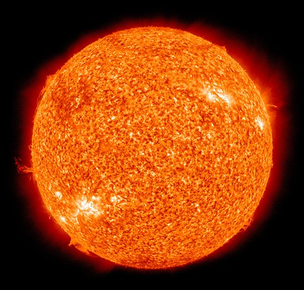

Со́нце (лат. Sol) — зоря, що є центром Сонячної системи.

Характеристики та хімічний склад Сонця
Сонце — центральне і наймасивніше тіло Сонячної системи. Його маса приблизно в 333 000 раз більша за масу Землі та у 750
разів перевищує масу всіх інших планет, разом узятих. Сонце — потужне джерело енергії, яку воно постійно випромінює в
усіх ділянках спектра електромагнітних хвиль — від рентгенівських і ультрафіолетових променів до радіохвиль.
Хімічний склад (за кількістю атомів) визначено з аналізу сонячного спектра:
- водень становить близько 90 %
- гелій — 9,88 %
- нші елементи — порядку 0,1 %
Внутрішня будова Сонця
- сонячне ядро — внутрішня частина, де відбуваються термоядерні реакції, простягається до 173 тис. км від
центру
-
зона променистого переносу, в якій перенесення енергії від центральної частини до верхніх шарів відбувається
переважно шляхом випромінювання, простягається від ядра до 494 тис. км від центру.
-
конвективна зона, в якій перенесення теплової енергії відбувається переважно шляхом конвекції, тобто рухами
розпеченого газу, і яка простягається до видимої поверхні Сонця.